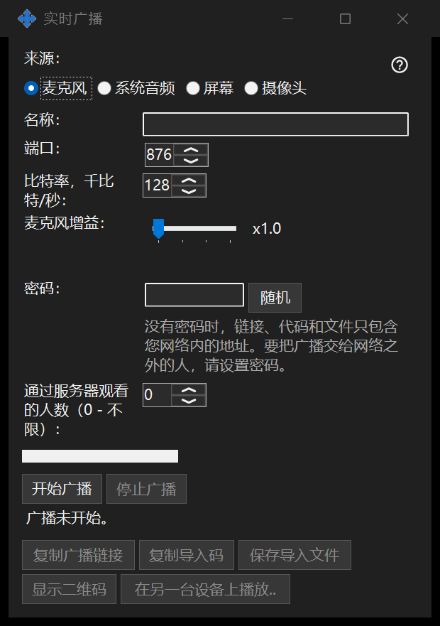

直播
用途说明
通过 Share Manager 分享屏幕、单个窗口、摄像头、麦克风或系统音频。在 64 位查看器中通过链接、代码或 .fmsbcast 文件打开直播。只有点击开始才会开始采集。


操作顺序
选择来源，然后选择屏幕采集使用的显示器或单个窗口，或选择摄像头及模式。开始前检查标题、观众密码、音频和局域网访问设置。观众会收到所选画面和声音，包括其中可见的私人内容。开播后再复制链接或保存 .fmsbcast 文件。停止会结束会话；关闭被采集窗口也会结束该窗口的直播。
界面元素
直播
选择来源，然后选择屏幕采集使用的显示器或单个窗口，或选择摄像头及模式。开始前检查标题、观众密码、音频和局域网访问设置。观众会收到所选画面和声音，包括其中可见的私人内容。开播后再复制链接或保存 .fmsbcast 文件。停止会结束会话；关闭被采集窗口也会结束该窗口的直播。